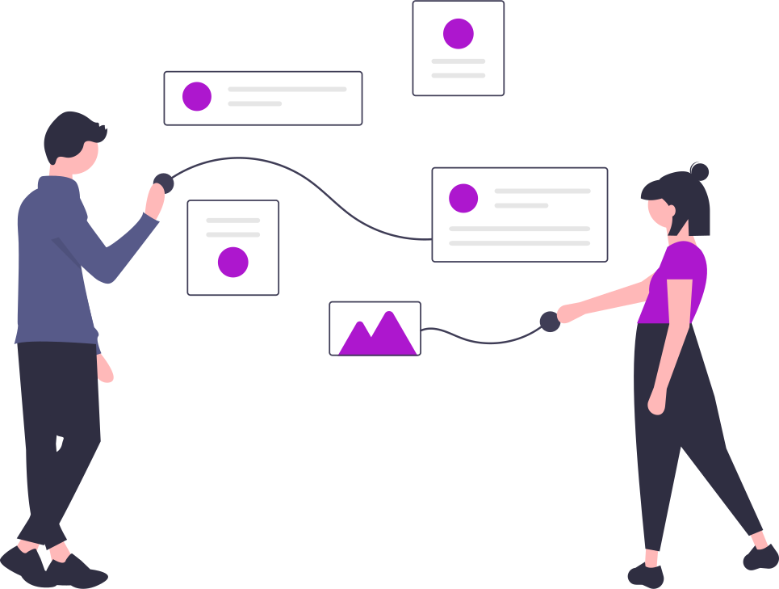
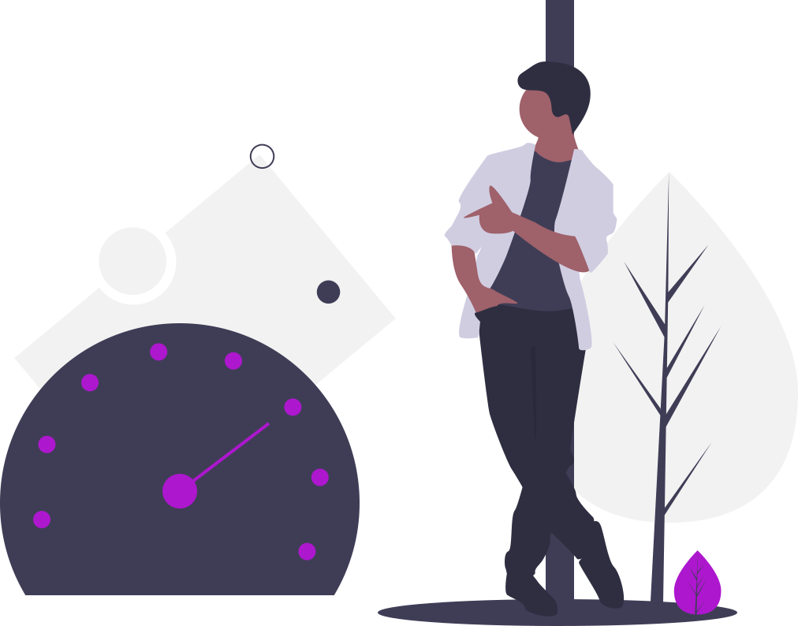
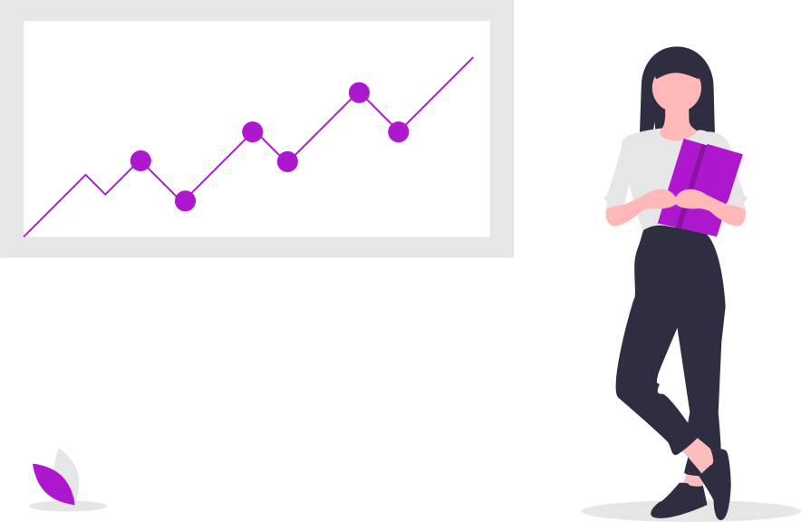
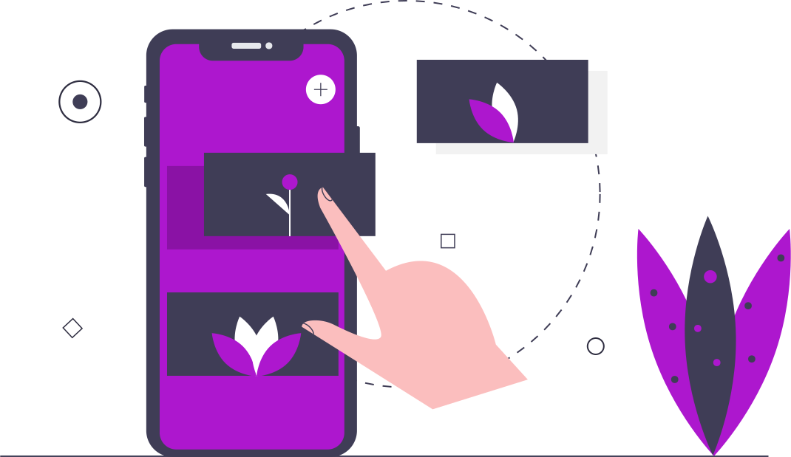

Über mich
HTML, CSS, JavaScript
Barrierefreiheit
Mobile Apps
Ich bin ein Java Fullstack Developer mit Schwerpunkt auf JEE und Web Apps (JSF oder reines HTML/JavaScript). Bin jedoch auch sehr an "Serverless" Alternativen interessiert, wie z.B. Quarkus, für das ich auch Open Source Contributor bin. Außerdem bin ich zertifizierter SCRUM Master (Zertifikat) und arbeite seit Jahren in großen agilen Projekten (Scrum + SAFe).
Vor der Zeit als Java Entwickler, war ich spezialisiert auf mobile Apps und professioneller iOS Entwickler. Ich führe dies nun als Hobby fort und habe mehrere Apps im App Store.
Teil meiner UI Expertise ist es auch, Webseiten barrierefrei zu erstellen. Hier konnte ich bereits mehrere Projekte sicher durch die abschließende Prüfung auf Barrierefreiheit führen.
Projekte
-
Juni 2018 bis heute
Fullstack Java Entwickler
Festanstellung
Ich bin als Fullstack Entwickler Teil eines Scrum Teams innerhalb eines sehr großen Projekts (> 300 Personen) des größten deutschen Telekommunikations-Anbieters im Bereich des Glasfaserausbaus.
Schwerpunkte:
- - Java Backend (JEE, EJB, Hibernate, REST)
- - Prozesse (JBPM)
- - Java Frontend (JSF, PrimeFaces, HTML, JavaScript)
- - Mobile Webapp (HTML, JavaScript, SAPUI5)
- - Barrierefreiheit
Eingesetzte Technologien:
- - Docker
- - Microservices
- - CI/CD
- - Testautomatisierung
- - JBoss EAP
- - OpenShift
-
März 2017 bis Mai 2018
Fullstack Java Entwickler
Festanstellung
Ich war als Fullstack Entwickler Teil eines Teams, für ein mittelgroßes Projekt des größten deutschen Telekommunikations-Anbieters (> 50 Personen) mit Wasserfall Modell im Bereich des Breitbandausbaus im Nahbereich.
Schwerpunkte:
- - Java Backend (JEE, REST)
- - Prozesse (JBPM)
- - Java Frontend (JSF, PrimeFaces, HTML, JavaScript)
- - Mobile Webapp (HTML, JavaScript, SAPUI5)
- - Barrierefreiheit
Eingesetzte Technologien:
- - Docker
- - CI/CD
- - Jenkins
- - JBoss EAP
- - AWS
-
März 2016 bis März 2017
Fullstack Java Entwickler
Festanstellung
Ich war als Fullstack Entwickler Teil eines Teams, für ein mittelgroßes Projekt des größten deutschen Telekommunikations-Anbieters (> 50 Personen) mit Wasserfall Modell im Bereich des Breitbandausbaus.
Schwerpunkte:
- - Java Backend (JEE, REST)
- - Prozesse (JBPM)
- - Java Frontend (JSF, PrimeFaces, HTML, JavaScript)
- - Mobile Webapp (HTML, JavaScript, SAPUI5)
- - Barrierefreiheit
Eingesetzte Technologien:
- - JBoss EAP
-
Oktober 2014 bis Februar 2017
iOS Entwickler
Festanstellung
Ich war als iOS Entwickler Teil eines Teams, für ein kleineres Projekt des größten bayerischen Agrar-Handelskonzerns.
Schwerpunkte:
- - iPhone App
- - iPad App
- - Anbindung externer Services
- - Offline Speicherung
- - Push Benachrichtigungen
Eingesetzte Technologien:
- - iOS